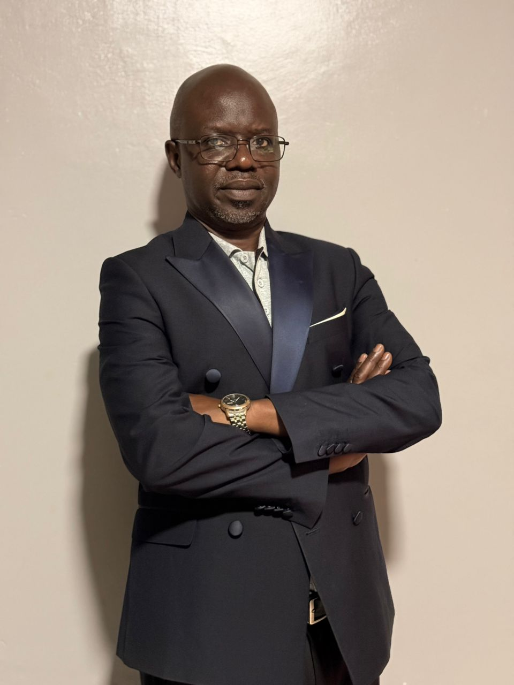
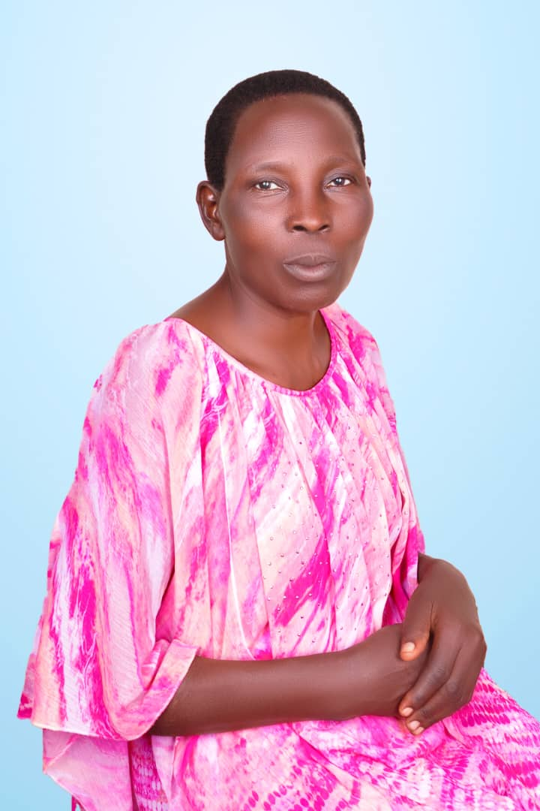
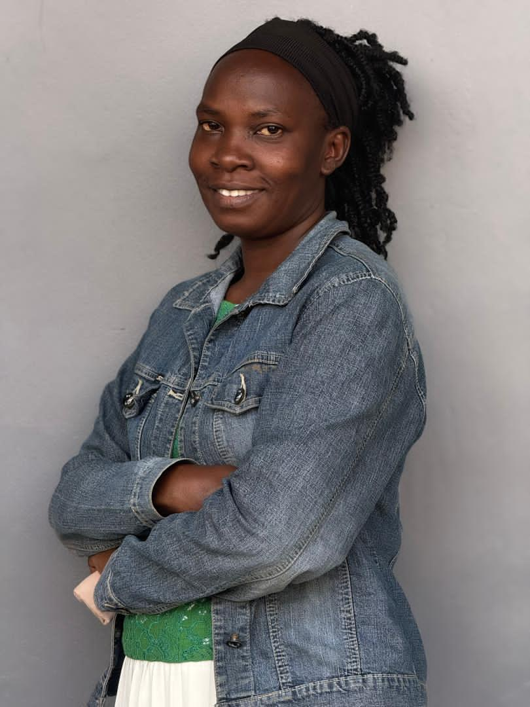
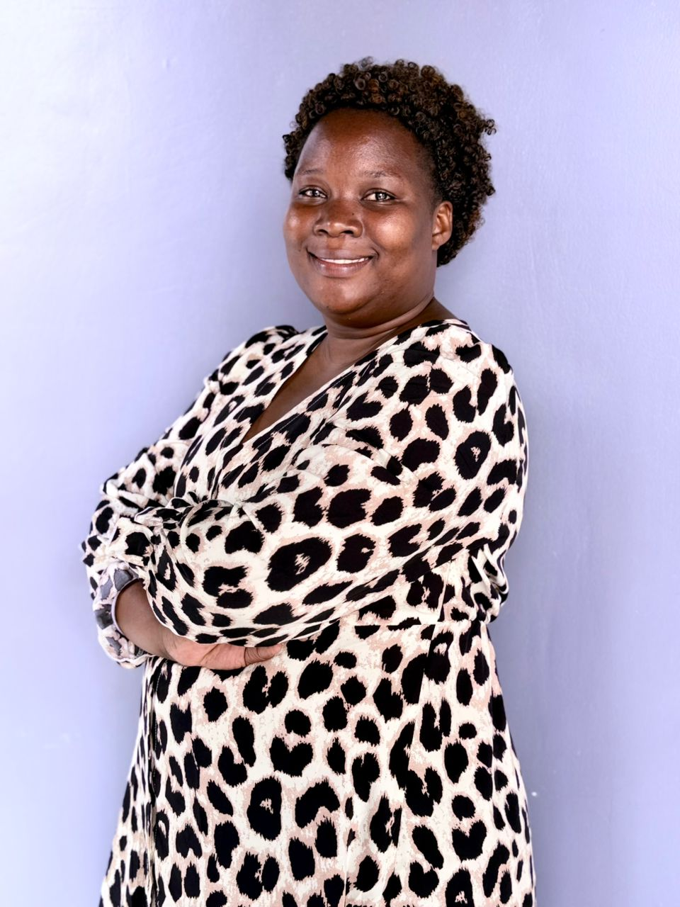
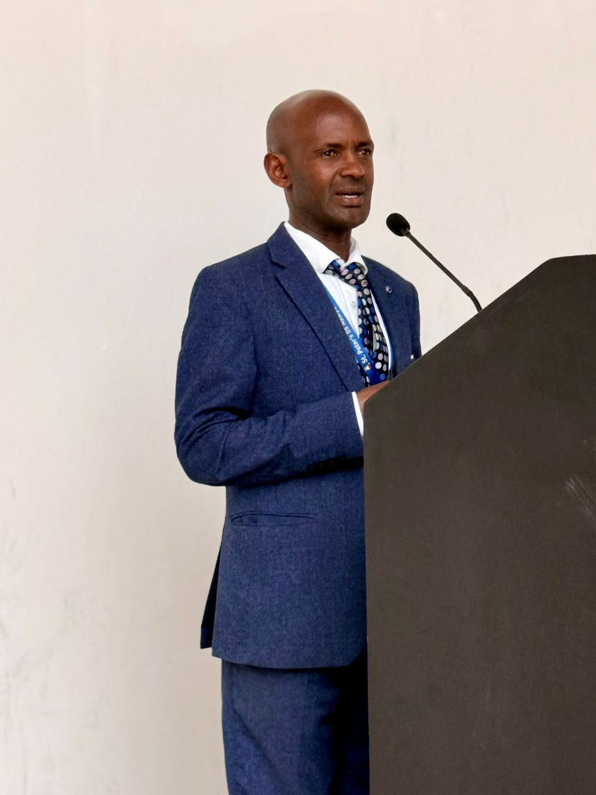

Building Godly Leaders, Transforming Generations
Equipping university students across Uganda with faith, purpose, and integrity to become effective witnesses of Christ.

Mr. Erick
Board Memmber

Ms. Nambalirwa Rose
Treasurer

Ms. Namboozi Jane
Board Memeber

Ms. Racheal Katongole
Superviosr

Mr. Katongole John
Chairman
Our Mission
Christian Legacy Makers (CLM) is an evangelical interdenominational Christian organization committed to sharing the good news of Jesus Christ on university and college campuses in Uganda; nurturing students to grow and become effective witnesses of Christ and leaders in the church and society, through Evangelism, Discipleship, and Compassionate Empathy.
Our Core Programs
Transforming lives through intentional, Christ‑centered initiatives
Evangelism
Campus outreaches, crusades, and one‑on‑one discipleship.
Discipleship
Bible studies, mentorship, and leadership training.
Compassionate Empathy
Community outreach, support programs, and holistic care.
At Christian Legacy Makers, we believe in transforming lives through Christ‑centered leadership. I have witnessed countless students grow in faith, purpose, and integrity. The impact is real, lasting, and nation‑shaping.
Join Us in Making an Eternal Impact
Your partnership helps us reach more students, train more leaders, and transform more communities across Uganda.